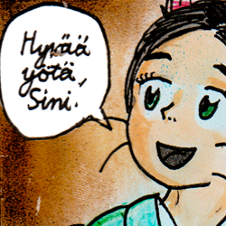
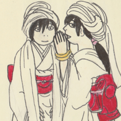

| 
| 
| ![Shurimanja-tyttö, jolla on pitkät mustat runsaat hiukset, mustavalkoiset kasvot, keltaiset isot silmät ja liinaksi venyttäytyvä kasvojen iho solmittuna kiinni päälaelta. Haitarimaiset joustavat venyvät käsivarret, reidet ja sääret, siniset kukkamaiset kädet ja jalat, päästä kasvava kukkamainen sininen elin, valkoinen kimono, punainen obi-vyö ja vyön päälle selkään solmien kiinnitetty valtava sininen lumpeenkukka. Kimonon kaulukseen on solmittu kaksi olkapäät ja käsivarret peittävää suurta vihreätä puun lehteä ja musta suu neulanterävine hampaineen.](../Images/Inga_loikkimassa_nurmikolla_thumb.png "Inga Žhuuyu")
|
Nomi Noki to Sini Noki on hanashi
Tässä on muutamia sarjakuvahahmojani. He ovat sarjakuvastani "Nomi to Sini Noki no hanashi". Tarinassa Nokin perhe on tutkintavankeudessa epäiltynä lihakaupan ryöstämisestä Hitachun kaupungissa. Perheen lapset sisarukset Nomi ja Sini onnistuvat pakenemaan heidän äidin vanhempiensa luo Fuzuun kauas sisämaahan. Matkalla he kohtaavat jos jonkinmoisia olentoja ja asoita. Perille saavuttuaan he tutustuvat uusiin olentoihin. Jatko-osissa lihakaupan oikea ryöstäjä saadaan kiinni sekä Sinin ja Nomin vanhemmat pääsevät vapaiksi syyttöminä. Tyttöjen äiti ja isä pääsevät muuttamaan lastensa luo, mutta pian alkaa sota valtavan suolajärven (valtameren kaltainen järvi) takaista vihollisvaltiota vastaan sodan muutenkin raivotessa ympäri maailmaa.
Ensimmäisenä Nomi Noki. Hänellä on kissan korvat ja pari viiksikarvaa poskissaan. Nomilla on lisäksi vihreät silmät; Sinillä siniset silmät. Hänellä on kissan korvat ja pari viiksikarvaa poskissaan. Nomilla on lisäksi vihreät silmät; Sinillä siniset silmät. Heidän nimensä tulevat heidän silmiensä väristä. Nomin nimi tulee väännettynä japaninkielen sanasta Momi no ki (樅の木), joka tarkoittaa kuusipuuta. Tarkalleenottaen Nomilla on kuusenvihreät silmät. Sinin nimi taas tulee suomenkielen sinisanasta viitaten siniseen. |
Nomin pikkusisko Sini Noki. Kaa on waterflame-keiju, joka tuo hämärää sinertävää valoa ja turvaa huoneeseen, missä Sini ja Noki nukkuvat. |
Nomin ja Sinin ystävä sekä suojelija Inga Žuuyu. Hän on shurimanja -tyttö, siksi hänen kasvonsa ovat erittäin erikoisen näköiset. Hänellä on shurimanjojen tapaan kasvojen iho sellainen, että hän levittää sen liinaksi ja solmii päänsä päälle. Hän asuu suurikokoisen perheensä kanssa pienen metsän takana Nomin ja Sinin naapurissa. |

| 
| 
|
| Waterflame-keiju nimeltään Kaa. Hän on Nomin ja Sinin äidin vanhempien kodin "sydän". Hän huolehtii yhdessä Lucicha-nimisen lysozome'in kanssa Nomin ja Sinin isovanhempien talon lämmityksestä, siisteydestä ja käytännöllisyydestä esimerkiksi. Vaikka waterflame'it ovat vesikeijuja, he takkatulen tapaan lämpöä ja valoa tuottavia olentoja. |
Nomin ja Sinin tulevaisuuden elämänkumppanit, veljekset Aida ja Tôutôu. Aida on nuorempi veli ja Tôutôu vanhempi. Heillä on koulunsa syyskauden asut päällään. Ingan pikkuveli Iiro Žuuyu on Aidan ja Tôutôun suojelija. |
Juudenkigen[djuudenkigen]-koira nimeltä Lio. Liolla on mielikuvitteellisen tosukawalaisuus-nimisen uskonnon punaiset tunnusmerkit otsassaan. 10 tulee siitä, että Liolla on kymmenen häntää. Lio itse asustelee Ingan pihapiirissä ja on vähän niinkuin Ingan perheen lemmikki. Suuremmassa kuvassa näkyvät numerot ja pisteet ovat päivämääriä vuodelta 2008, jolloin tuo piirros on piiretty. |

| 
| 
|
| Vihreä lysozome nimeltään Lucicha. Hän asustelee Nomin ja Sinin isovanhempien talon yhdessä kuumavesilähteessä huolehtien kylpemisalueen pääasiallisesta puhtaanapidosta. Tässä asiassa on hyvä tietää, mitä eläinsolujen lysosomit tekevät.
| Nomin ja Sinin äiti Aino Noki onnettomana vankityrmässä kuunloisteessa tuolilla istumassa.
| Suuressa Fuzu-järvessä asuva yottametalicafishington-vesilohikäärme nimeltään Fuzu. Hän on hurjannäköinen, mutta melko lempeä. Yottametalicafishington-vesilohikäärmeellä on erikoisesti päällystetty pää. Se on eräänlaista metalliluuta = elävää metallia, joka suojaa sen päätä ja korvia.
|

![Shurimanja-tyttö, jolla on pitkät mustat runsaat hiukset, mustavalkoiset kasvot, keltaiset isot silmät ja liinaksi venyttäytyvä kasvojen iho solmittuna kiinni päälaelta. Haitarimaiset joustavat venyvät käsivarret, reidet ja sääret, siniset kukkamaiset kädet ja jalat, päästä kasvava kukkamainen sininen elin, valkoinen kimono, punainen obi-vyö ja vyön päälle selkään solmien kiinnitetty valtava sininen lumpeenkukka. Kimonon kaulukseen on solmittu kaksi olkapäät ja käsivarret peittävää suurta vihreätä puun lehteä ja musta suu neulanterävine hampaineen.](../Images/Inga_loikkimassa_nurmikolla.png "Inga Žhuuyu")


{kind=link}
{kind=link}